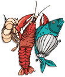

Среди примерно 76 миллионов случаев пищевых инфекций, регистрируемых ежегодно в США, от 10 до 19% обусловлены употреблением морепродуктов. Пищевые инфекции в США оказываются причиной около 325000 госпитализаций и 5000 летальных исходов ежегодно. Употребление сырых или недостаточно термически обработанных морепродуктов (рыба, моллюски) представляет собой ведущий фактор риска развития инфекционных заболеваний. В США потребление морепродуктов неуклонно возрастало на протяжении нескольких последних десятилетий, в среднем от 4,5 кг в 1960 г. до 7 кг на человека - в 2002 г. Этиология устанавливается при 44% вспышек, связанных с употреблением морепродуктов, причем вирусы являются самой частой причиной инфекций, а бактериальные патогены обусловливают большинство госпитализаций и летальных исходов.
Среди примерно 76 миллионов случаев пищевых инфекций, регистрируемых ежегодно в США, от 10 до 19% составляют инфекции, связанные с употреблением морепродуктов. Ежегодно в США около 325000 госпитализаций и 5000 летальных исходов связываются с пищевыми инфекциями. Примечательно, что в США потребление морепродуктов неуклонно возрастало на протяжении нескольких последних десятилетий, в среднем от 4,5 кг на человека в 1960 г. до 7 кг - в 2002 г. Более 63,5 млн. тонн морепродуктов вылавливается и употребляется ежегодно.
Этиология инфекций, связанных с потреблением морепродуктов, по результатам анализа всех вспышек в Нью-Йорке за 15-летний период, подтверждалась при 44% вспышек, 47% вспышек с подтвержденной этиологией вызывались вирусами, 9% - бактериями и 44% было обусловлено химическими агентами.

Три типа патологических процессов может возникать в связи с употреблением морепродуктов: аллергический, токсический и инфекционный. Морепродукты - это пресноводные или морские животные, включая рыбу и ракообразных. Ракообразные включают моллюсков, таких как устрицы, мидии, кукли, и прочих морских моллюсков, а также самих ракообразных - крабов и креветок. Рыба менее часто ассоциируется с инфекционными заболеваниями, поскольку обычно употребляется после качественной термической обработки. Моллюски же обычно продаются и употребляются сырыми или частично обработанными. Более того, моллюски являются природными пищевыми фильтрами, получающими питание путем фильтрации нескольких литров воды в день. В ходе этого процесса они могут концентрировать в высоких количествах болезнетворные микроорганизмы в своих тканях. Устрицы способны концентрировать фекальные колиформные бактерии более чем четырехкратно по сравнению с окружающей водной средой. Данный процесс не является единственным механизмом аккумуляции патогенных вирусов и бактерий.
Большинство инфекционных диарей, связанных с потреблением морепродуктов, вызываются вирусами, относящимися к семейству Calciviridae (Norovirus и Sapporo вирусы), а также вирусом гепатита А.
К бактериальным возбудителям, вызывающим инфекции, связанные с потреблением морепродуктов, относятся вибрионы (V.parahaemolyticus, V.vulnificus, V.cholerae), сальмонеллы (S.enteritidis), Aeromonas hydrophila, Plesiomonas shigelloides, L.monocytogenes, C.botulinum, реже кампилобактеры (C.jejuni, C.coli, C.fetus) и стрептококки группы А.
Фактором, наиболее тесно связанным с развитием инфекции, является потребление сырых или полуготовых морепродуктов. Люди с предшествующими заболеваниями, особенно заболеваниями печени, оказываются наиболее чувствительными к инфекции.
A.A. Butt, K.E. Aldridge, C.V. Sanders.
Infections related to the ingestion of seafood. Part I: viral and bacterial infections.
Lancet Infect Dis 2004; 4:201-12